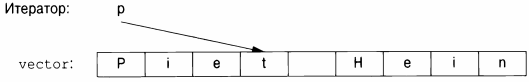
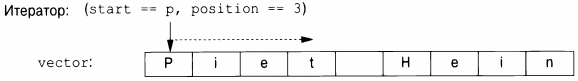
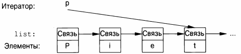

⇐12.2 Применение итераторов 12.4 Итераторы потоков⇒
Что же такое итераторы? Любой конкретный итератор является объектом некоторого типа. Однако существует много разных типов итераторов, потому что итератору необходимо хранить информацию, необходимую для выполнения своей работы для определенного типа контейнера. Эти типы итераторов могут различаться в зависимости от контейнеров и специализированных требований, которые к ним предъявляются. Например, итератор у vector может быть обычным указателем, потому что указатель является довольно разумным средством обращения к элементу вектора.
В качестве альтернативы итератор для vector можно реализовать как указатель на данные vector плюс индекс.
Такой итератор позволяет выполнять проверку выхода за границы диапазона.
Итератор для list должен быть чем-то более сложным, чем простой указатель на элемент, потому что элемент списка в общем случае не знает, где находится следующий элемент этого списка. Таким образом, итератор списка может быть указателем на связь со следующим элементом.
Общими для всех итераторов являются их семантика и наименование их операций. Например, применение оператора ++ к любому итератору дает итератор, который указывает на следующий элемент. Точно так же оператор * дает элемент, на который указывает итератор. Фактически любой объект, который подчиняется нескольким простым правилам, подобным этим, является итератором. Iterator - это концепт (§7.2, §12.7). Кроме того, пользователям редко нужно знать тип конкретного итератора; каждый контейнер "знает" типы своих итераторов и делает их доступными под обычными именами iterator и const iterator. Например, list<Entry>::iterator - это общий тип итератора для списка list<Entry>. Нам редко приходится беспокоиться о деталях определения этого типа.